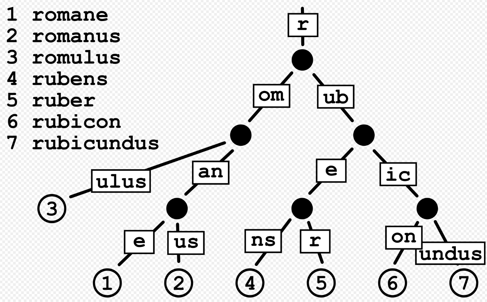

Gin 框架的学习资料
Go 内置了 http.Server 的实现，如下：
package main
import (
"log"
"net/http"
"time"
)
type NewHandler struct{}
func (s *NewHandler) ServeHTTP(writer http.ResponseWriter, req *http.Request) {
// 根据 req 查找对应的 handler
if req.URL.Path == "/hello2" {
writer.Write([]byte("Hello2 World!"))
}
}
func newServer(addr string) {
s := &http.Server{
Addr: addr,
Handler: nil,
TLSConfig: nil,
ReadTimeout: 0,
ReadHeaderTimeout: 0,
WriteTimeout: 0,
IdleTimeout: 0,
MaxHeaderBytes: 0,
TLSNextProto: nil,
ConnState: nil,
ErrorLog: nil,
BaseContext: nil,
ConnContext: nil,
}
s.Handler = &NewHandler{}
log.Fatal(s.ListenAndServe())
}
func main() {
// $ curl 127.0.0.1:8082/hello2
// Hello2 World!%
go newServer(":8082")
time.Sleep(1000 * time.Second)
}
可以看到关键是：当一个 http 请求到达时，ServerHTTP() 怎样快速找到对应的处理函数进行响应。Gin 最主要功能就是实现 request 与处理函数直接映射，也就是 router 管理。
package main
import (
"github.com/gin-gonic/gin"
"net/http"
"time"
)
func main() {
r := gin.Default()
r.GET("/ping", func(c *gin.Context) {
c.JSON(200, gin.H{
"message": "pong",
})
})
//r.Run() // listen and serve on 0.0.0.0:8080
s := &http.Server{
Addr: ":8080",
Handler: r,
ReadTimeout: 10 * time.Second,
WriteTimeout: 10 * time.Second,
MaxHeaderBytes: 1 << 20,
}
s.ListenAndServe()
}
Gin 选用 Radix_tree 管理路由表，Radis_tree 是“树”的一种，实现了不定长字符串的查找，叶子节点中存放的 handler 函数，非叶子节点指向子节点，并在“边”中标记前缀字符：
因为每条边中包含不止一个字符，所有 Radis_tree 的高度降低，查找效率提高。

参考资料